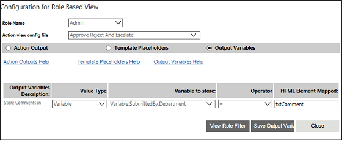

No
AdvanceUI Fields Property window
You can launch the user-interface to configure the functionality of the Work activity from this property window. To open this window, click the button for the 'AdvanceUI Fields' property.
You can select the type of work activity view to configure – General or Role Based – using the two radio buttons in this window.
You can click Next to go to the next window for adding the activity details. This will vary depending on the type of view selected.
Configuration for General View
The window shown below is opened when you click the General View radio button in the previous window. It is used to specify the action outputs for the Work activity with the General View. This window has two fields common to the General View, which are displayed at the top of all the corresponding property windows.
You can specify the Advance UI XML configuration file in this field.
There are three radio buttons – Action Outputs, Template PlaceHolders, and Output Variables – that can be selected to display the respective property setting controls in the lower half of the window.
The window shown below is displayed when the Activity Output is selected. It can be used to map the outputs of the activity with the possible outputs and specify whether the output is a task completion maker.
You can set the following parameters here.
You can click Save Action Outputs to save the new settings.
The window shown below is displayed when you select the Template Placeholders radio button. You can specify the values to the template placeholders in the Work activity here.
The window lists all the template placeholders configured for the activity under the Template Placeholders Description column. You can specify the value for each placeholder using the following controls.
You can click Preview to see a preview of the template setting. You can click Save Template Placeholders to save the settings.
The window shown below is displayed when you select the Output Variables radio button. You can specify the output variable and the HTML element mapped to it here
The window lists all the output variables for the activity under the Output Variables Desc column. You can specify the value for each placeholder using the following controls.
You can click Save Output Variables to save the settings.
Configuration for Role Based View
The window shown below is opened when you click the Role Based View radio button in the main AdvanceUI Fields property window. It is used to define a role for the Work activity. It is displayed when you use the Work activity for the first time. This window has three columns in this window, which you can use to add roles.
This window has three buttons.
The window shown below is displayed when you click the Define Filter button in the previous window. You can build a role filter condition for the new role here. The following image shows how to build a role filter condition
The window has a set of drop downs at the top to select the different parameters required to build an expression to define the filter. You can also find related buttons next to the drop downs.
The window shown below is displayed when you click Next in the Role Definition window, if you are using the Work activity for the first time. If you are not using the activity for the first time this window will be opened when you select the Role Based View radio button in the ActivityUI property main window. You can specify the action outputs for the Work activity with the Role Based View. This window has two fields common to the General View, which are displayed at the top of all the corresponding property windows.
There are three radio buttons – Action Outputs, Template Placeholders, and Output Variables – that can be selected to display the respective property setting controls in the lower half of the window.
The window shown below is displayed when the Action Output is selected. It can be used to map the outputs of the activity with the possible outputs and specify whether the output is a task completion maker.
Action Output window for Role Based View
You can set the following parameters here.
You can click the Save Action Outputs to save the new settings.
The window shown below is displayed when you select the Template Placeholders radio button. You can specify the values to the template placeholders in the Work activity here.
Template Placeholders window for Role Based View
The window lists all the template placeholders configured for the activity under the Template Placeholders Description column. You can specify the value for each placeholder using the following controls.
You can click Preview to see a preview of the template setting. You can click Save Template Placeholders to save the settings.
The window shown below is displayed when you select the Output Variables radio button. You can specify the output variable and the HTML element mapped to it here.

Output Variables window for Role Based View
The window lists all the output variables for the activity under the Output Variables Desc column. You can specify the value for each placeholder using the following controls.
You can click the Save Output Variables to save the settings.